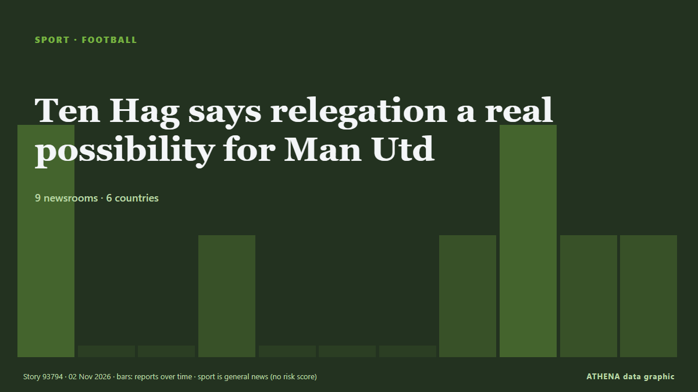

Football
| 20 oct. | 0 |
|---|---|
| 21 oct. | 1 |
| 22 oct. | 0 |
| 23 oct. | 1 |
| 24 oct. | 0 |
| 25 oct. | 0 |
| 26 oct. | 0 |
| 27 oct. | 3 |
| 28 oct. | 3 |
| 29 oct. | 2 |
| 30 oct. | 6 |
| 31 oct. | 4 |
| 1 nov. | 4 |
| 2 nov. | 0 |
Les titres sont affichés en anglais, tels que publiés.

Ten Hag says relegation a real possibility for Man Utd
United sit 17th with seven points from nine games, above relegation-placed Crystal Palace on goal difference, and are winless in nine matches, their longest run without victory since 1984. de Free Malaysia Today
1 killed, 8 injured in shooting outside 'Magic City Classic' in Alabama
One person was killed and eight others were wounded in a mass shooting just outside Legion Field after the annual "Magic City Classic" football game, police in Birmingham, Alabama, said. de ESPN
14 players could miss Liverpool vs Arsenal after Andoni Iraola injury update
Liverpool have the chance to close the gap on Arsenal in the Premier League table when they meet at Anfield this afternoon. de Liverpool Echo
China State TV Does Not Air First La Liga Games Since Mbappe Furore
BEIJING, China (AFP) -- Chinese state television did not air on Saturday the first La Liga games since Real Madrid star Kylian Mbappe caused anger with a joke about the country's former leader Mao… de Jamaica Observer
Barca hammer Alaves 6-1 to retain Liga top spot
Raphinha and Lamine Yamal struck twice each as Barcelona thrashed Alaves 6-1 on Saturday to reclaim their La Liga lead and get back on track after two damaging defeats. de Vanguard
Brighton stun Man City, 10-man Man Utd beaten by Chelsea
Brighton inflicted a second straight Premier League defeat on Manchester City with a 1-0 win to close within two points of the leaders on Saturday, while Manchester United slumped to another damaging… de The Namibian
Aston Villa vs Jamie Carragher - 'Unacceptable insults', legal action and an apology
Jamie Carragher has been pushing a narrative that Unai Emery should leave Aston Villa for Manchester United if given the chance, and from there, things have escalated. de Birmingham Mail
Pressure piles on Man United’s Carrick after 2-0 defeat at Chelsea
The travelling fans applauded Michael Carrick when he strode to the corner of the Shed End at Stamford Bridge to acknowledge them but Manchester United’s former stalwart midfielder and current… de Cyprus Mail
Kenya: Ruto - Why Bayern V Ajax in Nairobi Is Perfect Tribute to Former PM Raila Odinga
[Capital FM] NAIROBI -- President William Ruto believes there could be no better way to honour former Prime Minister Raila Odinga than a blockbuster tie between Bayern Munich and Ajax at a stadium… de AllAfrica
Kane misses penalty as Bayern draw 2-2 with Dortmund
Harry Kane missed a penalty for Bayern Munich and was punished by Fabio Silva’s late equaliser as Borussia Dortmund earned a 2-2 draw in Der Klassiker. de Sky Sports
Spain win inaugural FIFA U15 World Cup
Spain won the inaugural FIFA Under-15 World Cup and Festival after defeating the Czech Republic 3-0 in Friday’s final in Baku, Azerbaijan. de Trinidad Express
Hakimi bags hat-trick as PSG thrash Le Havre 5-1
Achraf Hakimi rose to the occasion scoring a glorious hat-trick on Friday as a heavily rotated Paris Saint-Germain thumped rock-bottom Le Havre 5-1 in Ligue 1. de Vanguard
Man City beaten by Brighton as Yasin Ayari makes amends for midweek penalty miss
Ayari missed a spot-kick in Wednesday’s shoot-out defeat in the Carabao Cup against City but scored the only goal of the game on Saturday. de The Irish News (Belfast)
Arteta tells Dowman Premier League is 'not Disneyland' after ban upheld
LONDON: Arsenal manager Mikel Arteta said teenager Max Dowman must learn to cope with the demands of elite football after the winger’s red card in the League Cup defeat at fourth-tier Fleetwood Town… de New Straits Times
Michael Carrick confirms Bruno Fernandes will remain Manchester United captain
Manchester United captain Bruno Fernandes turned on head coach Michael Carrick after one of the club's most humiliating nights in European history. de MyJoyOnline
England heading out of the World Cup despite beating Papua New Guinea
The story of England’s World Cup exit - despite their win over Papua New Guinea. de Yorkshire Post
Azerbaijan to face Afghanistan in final match at FIFA U-15 World Cup in Baku
Azerbaijan will play its final match at the FIFA U-15 World Cup and Festival, being held in Baku, today. de AzerNews
Everton beat Newcastle to set up League Cup quarter-final with Fleetwood
Everton advanced to the League Cup quarter-finals with a 3-1 victory over Newcastle United on Thursday, setting up a clash against fourth-tier side Fleetwood Town. de Cyprus Mail
Africa Cup of Nations to maintain 2-year cycle after CAF U-turn
The Africa Cup of Nations will maintain its two-year cycle after a U-turn from the Confederation of African Football. de Africanews (English)